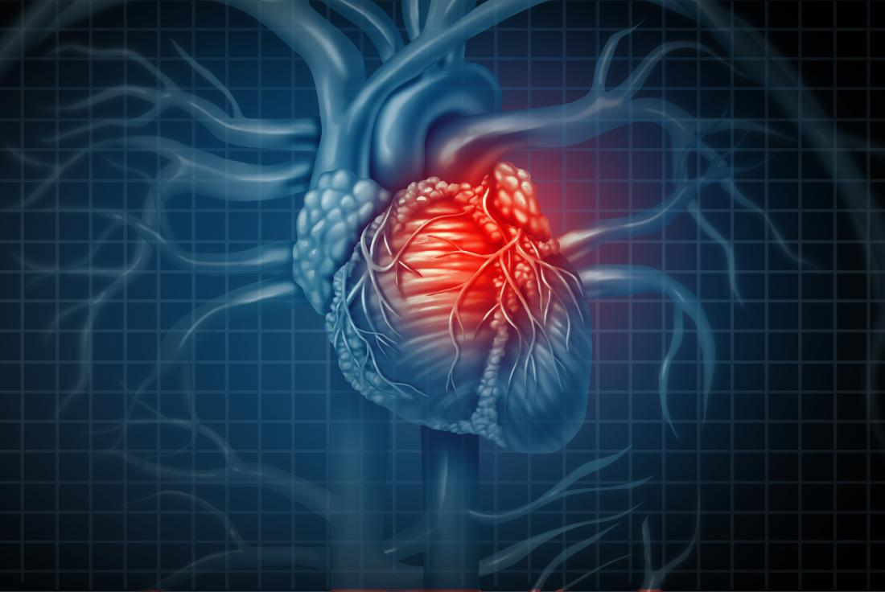
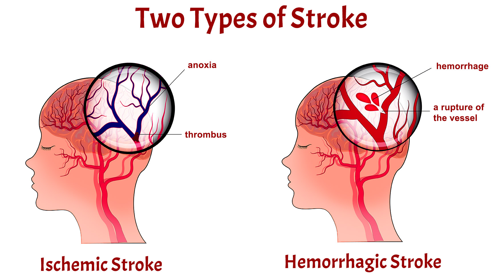

SYMPTOMS
How can you Know someone has a Heart Attack or Stroke? Do you feel any tightness in your chest??
Are your arms weak when you try to raise them? Does you face droop??
Do you have difficulties when speaking or you find it hard to understand others?
What are the main symptoms of Stroke and Heart Attack?


What is Stroke?
Stroke also known as cerebrovascular accident or CVA is a disease that affects the arteries leading to and within the brain. A stroke occurs when a blood vessel that carries oxygen and nutrients to the brain is either blocked by a clot or bursts
A stroke occurs when blood flow to an area of the brain is cut off as such the brain cells begin to die
When brain cells die during a stroke abilities controlled by that area of the brain such as memory and muscle control are lost. A stroke is a medical emergency because strokes can lead to death or permanent distability.There are oppurtunites to treat stroke but that the treatment needs to be started in the first few hours.
There are two types of stroke
- Hemorrhagic Stroke: caused by a leaked blood vessel
- Ischemic Stroke: caused when a blood vessel carring blood to the brain is blocked
